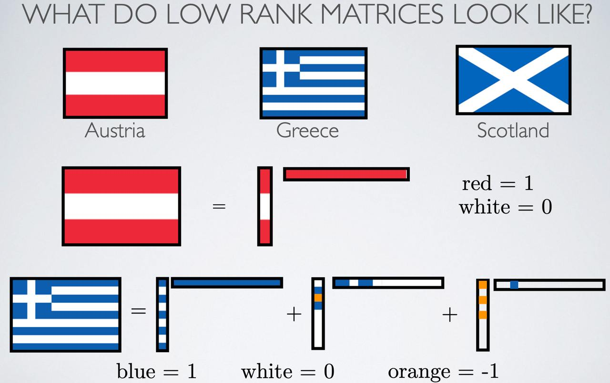
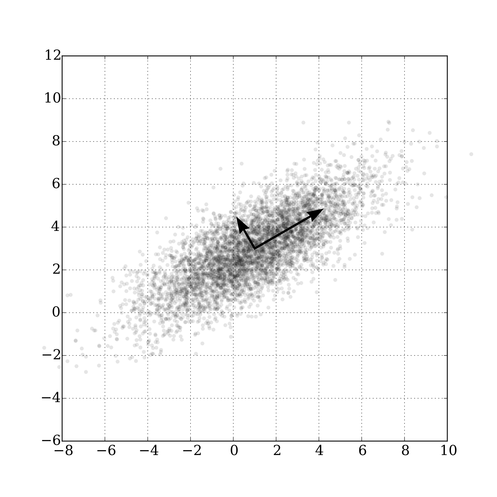
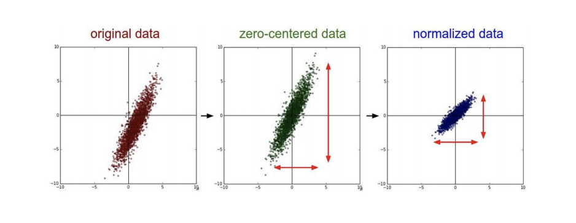
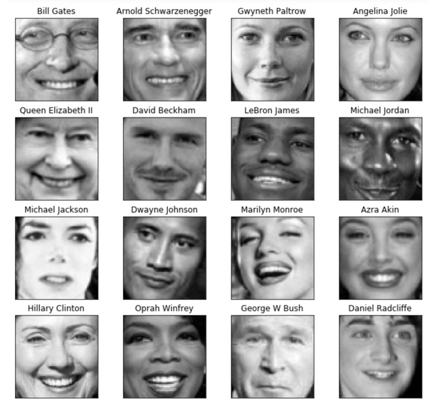
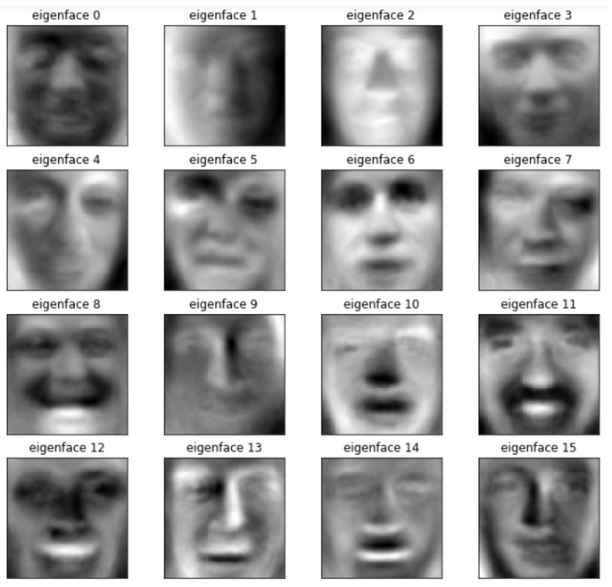
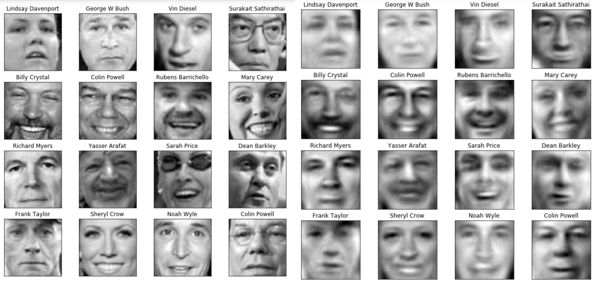
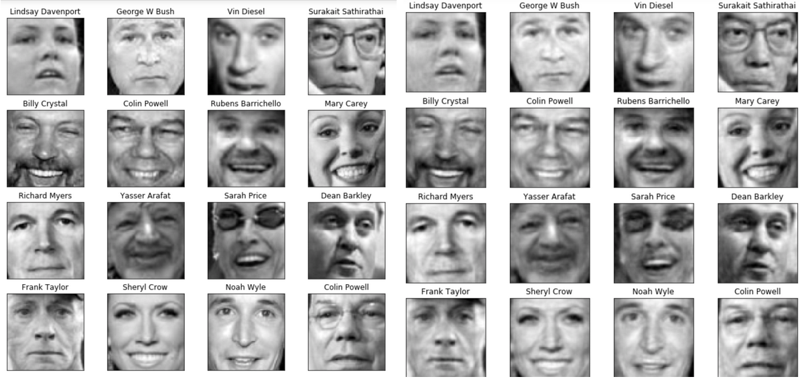

МФТИ · Машинное обучение · 5 октября 2026
SVD, PCA и честная оценка модели
Как устроить представление данных – и проверить, что оно помогает?
МФТИ · Машинное обучение
5 октября 2026
МФТИ · Машинное обучение · 5 октября 2026
Что осталось с прошлой лекции?
Сегодня: вычислить разложение, выбрать число компонент и проверить предсказания.
МФТИ · Машинное обучение · 5 октября 2026
Что делает матрица с направлениями?
Сначала сменить входной базис. Затем растянуть оси. Затем сменить выходной базис.
Ортогональное преобразование может включать отражение.
МФТИ · Машинное обучение · 5 октября 2026
Сингулярное разложение: три множителя
выходные направления
неотрицательные масштабы
входные направления
Матрица ; – число независимых направлений (ранг). – единичная матрица. Компактная SVD опускает нулевые направления.
МФТИ · Машинное обучение · 5 октября 2026
Откуда взять входные направления?
Собственные векторы выбрать ортонормальными; одинаковые значения допускают разные базисы.
МФТИ · Машинное обучение · 5 октября 2026
Посчитаем на одной матрице
МФТИ · Машинное обучение · 5 октября 2026
Теперь найти выходные направления
Равенство здесь – свойство выбранной симметричной положительно определённой матрицы.
МФТИ · Машинное обучение · 5 октября 2026
Один ортогональный шаг: обнулить элемент
Обнулить нижний элемент первого столбца, сохранив длины.
Для большой матрицы аналогично действуют слева и справа; затем остаётся бидиагональная задача.
МФТИ · Машинное обучение · 5 октября 2026
Как SVD считает компьютер?
Здесь полные множители: , ортогональны; бидиагональна.
Матрица удобна для ручного вывода; численный алгоритм может обходиться без неё.
МФТИ · Машинное обучение · 5 октября 2026
Что потеряется, если оставить один масштаб?
Ранг – число независимых направлений.
Ранг : все выходы лежат на одной прямой.
Норма Фробениуса: квадрат – сумма квадратов всех элементов.
МФТИ · Машинное обучение · 5 октября 2026
Почему отбрасывать меньшие значения?
Лучшее приближение заданного ранга по сумме квадратов ошибок.
; – число сохранённых направлений. Критерий – восстановление матрицы.
МФТИ · Машинное обучение · 5 октября 2026
Низкий ранг виден даже у картинки

Одноцветная вертикальная полоса: столбец × строка.
Ранг суммы может быть больше.
Австрия: красный , белый . Греция: синий , белый , оранжевый в разложении.
МФТИ · Машинное обучение · 5 октября 2026
Проверка: что сохраняет усечение?
Матрица получила только первую компоненту.
Что произойдёт с векторами и ?
Первое направление сохранено; второе уничтожено.
МФТИ · Машинное обучение · 5 октября 2026
Как совместить два облака слов?
Известные пары задают соответствия.
Поворот сохраняет длины и расстояния.
Учебные координаты, не реальные эмбеддинги.
МФТИ · Машинное обучение · 5 октября 2026
Какая матрица совместит известные пары?
Строки – соответствующие векторы; – число пар.
След – сумма диагональных элементов. Минимизировать ошибку = максимизировать последний след.
МФТИ · Машинное обучение · 5 октября 2026
SVD решает и эту задачу
Масштабы отброшены: осталось ортогональное отображение.
Если нужен только поворот, добавить ; при необходимости изменить знак последнего направления.
МФТИ · Машинное обучение · 5 октября 2026
Какую прямую выбрать для проекции?

PCA – метод главных компонентов.
Первая ось сохраняет наибольший разброс проекций относительно центра.
Следующие оси ортогональны предыдущим.
МФТИ · Машинное обучение · 5 октября 2026
У данных есть строки, у объектов – столбцы
наблюдений; признаков.
МФТИ · Машинное обучение · 5 октября 2026
Центрирование ≠ масштабирование

Для обычной PCA центрировать признаки. Масштабирование выбирать по единицам и задаче.
МФТИ · Машинное обучение · 5 октября 2026
Почему первая ось совпадает с SVD?
Ковариационная матрица показывает совместный разброс признаков; .
Правые сингулярные векторы дают оси PCA.
МФТИ · Машинное обучение · 5 октября 2026
Разложение того же набора точек
; ; .
МФТИ · Машинное обучение · 5 октября 2026
Повернуть ось: сколько разброса осталось?
Синие точки – наблюдения. Бирюзовые – проекции; – координата проекции.
Первая ось: .
МФТИ · Машинное обучение · 5 октября 2026
Новая координата и обратная проекция
Отклонение потеряно.
МФТИ · Машинное обучение · 5 октября 2026
Оси, координаты и восстановление
– оси; – новые координаты объектов.
МФТИ · Машинное обучение · 5 октября 2026
Сколько компонент оставить?
В нашем примере одна компонента сохраняет суммарной дисперсии.
Порог дисперсии – правило сжатия, а не гарантия полезного предсказания.
МФТИ · Машинное обучение · 5 октября 2026
Компоненты можно увидеть


Один объект описывается весами общих компонент; компонента сама может выглядеть как размытое лицо.
МФТИ · Машинное обучение · 5 октября 2026
Сколько деталей вернётся?


В каждом блоке слева – оригиналы, справа – восстановление.
МФТИ · Машинное обучение · 5 октября 2026
Большой разброс может быть бесполезным для ответа
Представьте: один признак сильно меняется, но не связан с классом. Другой меняется мало, но разделяет классы.
Число компонент для предсказания выбирать по качеству на новых данных.
МФТИ · Машинное обучение · 5 октября 2026
На каких данных выбирать число компонент?
Метрика – численный показатель качества прогнозов.
Если тест меняет решение о модели, он уже участвует в выборе.
МФТИ · Машинное обучение · 5 октября 2026
Что считается новым объектом?
Случайное разбиение: независимые новые наблюдения.
Группы: целый человек или источник в одной части.
Время: учиться на прошлом, проверять на будущем.
Стратификация сохраняет доли классов, но сама по себе не устраняет зависимость между объектами.
МФТИ · Машинное обучение · 5 октября 2026
Все записи пациента оставить вместе
Если нужен прогноз для нового пациента, все его записи оставить для проверки.
МФТИ · Машинное обучение · 5 октября 2026
Обучаться на прошлом, проверять на будущем
Проверочное окно позже обучающего. Порядок времени сохранить внутри CV.
МФТИ · Машинное обучение · 5 октября 2026
Кросс-валидация повторяет обучение и проверку
Разделить обучающий набор на частей – фолдов.
Каждый фолд по очереди служит валидацией; остальные – обучением.
– метрика на проверочном фолде . Тест остаётся вне цикла.
МФТИ · Машинное обучение · 5 октября 2026
Центр и оси PCA обучать внутри каждого фолда
Предобработка всей выборки до CV даёт валидационным объектам влияние на обученную модель.
МФТИ · Машинное обучение · 5 октября 2026
Выбрать модель, затем один раз открыть тест
После выбора переобучить всю цепочку: предобработка → PCA → классификатор.
CV для выбора и CV для итоговой оценки – разные роли. Для честной оценки всего выбора нужна внешняя проверка.
МФТИ · Машинное обучение · 5 октября 2026
Где здесь утечка?
1. Найти среднее и оси PCA по всем данным.
2. Разбить преобразованные данные на фолды.
3. Выбрать по средней точности.
Утечка начинается в шаге 1: проверочная часть повлияла на представление.
Сначала разбить; затем в каждом фолде заново обучить предобработку.
МФТИ · Машинное обучение · 5 октября 2026
Что значит «хорошо предсказать»?
– истинный класс; – предсказанный.
| Объект | ||||||||||
|---|---|---|---|---|---|---|---|---|---|---|
равно , если условие верно, иначе . Какие две ошибки допущены?
МФТИ · Машинное обучение · 5 октября 2026
Разделить ошибки по их направлению
| Предсказан | Предсказан | |
|---|---|---|
| Истинный | TP = | FN = |
| Истинный | FP = | TN = |
Положительный класс – . TP, TN – верные ответы; FP, FN – два типа ошибки.
МФТИ · Машинное обучение · 5 октября 2026
Высокая accuracy может скрыть провал
Учебный набор: отрицательных и положительных объектов.
Предсказывать всем .
Ни один положительный объект не найден.
МФТИ · Машинное обучение · 5 октября 2026
Два вопроса – два знаменателя
Среди найденных положительных – сколько действительно положительных?
Среди всех положительных – сколько удалось найти?
При нулевом знаменателе значение не определено; правило обработки задаётся отдельно.
МФТИ · Машинное обучение · 5 октября 2026
Если нужен один показатель
Гармоническое среднее: обе величины должны быть высокими.
F1 не учитывает TN и сам по себе не задаёт стоимость ошибок.
МФТИ · Машинное обучение · 5 октября 2026
Функция потерь и метрика отвечают разным задачам
На той же задаче обучать вероятности по log loss:
по модели; .
Выбирать классы по порогу :
Accuracy/F1 считают уже пороговые решения.
Log loss может служить и метрикой на валидации.
МФТИ · Машинное обучение · 5 октября 2026
Один скор – разные решения
Скор упорядочивает объекты; положительный класс присвоить при .
Граница меняет Precision и Recall. Выбирать её на валидации, исходя из задачи.
МФТИ · Машинное обучение · 5 октября 2026
ROC: что меняется вместе с порогом?
Уменьшать порог – по очереди включать объекты в положительный класс.
Для ROC нужны скоры; калиброванные вероятности не обязательны.
МФТИ · Машинное обучение · 5 октября 2026
ROC-AUC проверяет порядок пар
Выше скор у положительного объекта – правильно упорядоченная пара.
Строго возрастающее преобразование скоров сохраняет AUC.
МФТИ · Машинное обучение · 5 октября 2026
PR-кривая делает положительный класс центром внимания
Каждая точка отвечает: сколько найдено и сколько среди найденных верно.
При редком положительном классе ложные срабатывания особенно заметны.
Пунктир: доля положительных объектов в нашем наборе.
Average Precision и площадь трапециями под PR-кривой – разные вычисления.
МФТИ · Машинное обучение · 5 октября 2026
Хорошее ранжирование не гарантирует честные вероятности
Сохранить порядок скоров, но объявить все большие значения почти единицей.
Калибровка: среди объектов с прогнозом доля положительных должна быть около .
Это отдельная проверка на данных, не участвовавших в подгонке калибровки.
МФТИ · Машинное обучение · 5 октября 2026
Если классов больше двух
Пусть – число классов. Каждый класс рассматривать как «этот класс против остальных».
Macro: всем классам равный вес. Micro: сначала сложить TP, FP и FN всех классов.
Weighted: усреднить показатели с весами по числу истинных объектов класса.
Редкий класс может потеряться в среднем; смотреть и метрики каждого класса.
МФТИ · Машинное обучение · 5 октября 2026
Что именно нужно выбрать до теста?
Цель – находить положительные объекты, сохраняя заданную долю верных срабатываний.
Что выбирать: число компонент, модель, порог или всё сразу?
Всю цепочку оценивать вместе на валидации/CV.
Например: максимизировать Recall при Precision не ниже заданного требования.
МФТИ · Машинное обучение · 5 октября 2026
Представление, выбор и проверка – одна цепочка
PCA не видит меток. CV не исправляет утечку автоматически. AUC не выбирает порог и не проверяет калибровку.
Проверка себя: где оценивать центр, сколько направлений оставить и какую ошибку считать важной?